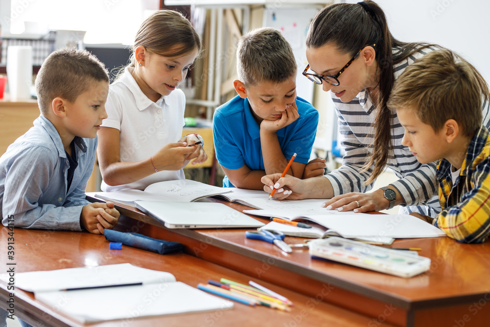
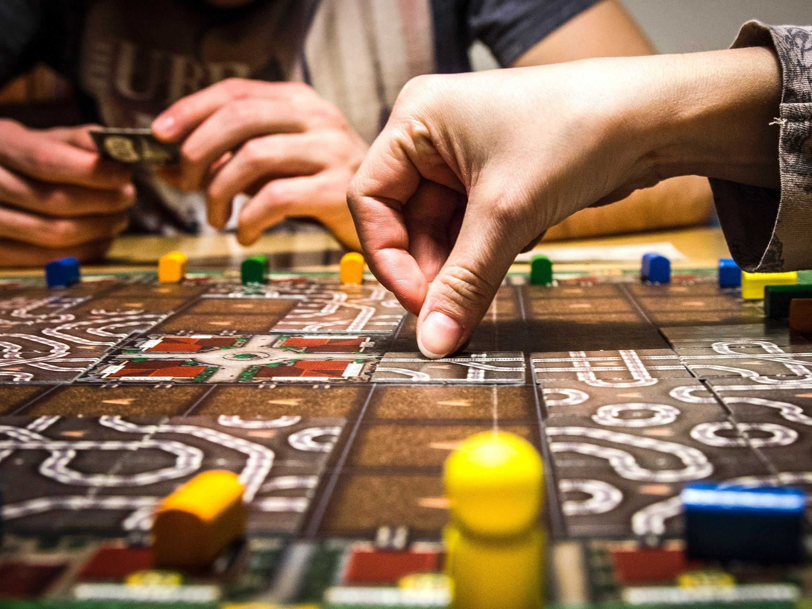

Esporte e Disciplina
Judô
Desenvolve disciplina, respeito, autocontrole, coordenação motora, confiança e hábitos saudáveis por meio da prática esportiva.
O Colégio Militar Municipal Tiradentes LII oferece atividades complementares que contribuem para o desenvolvimento acadêmico, cultural, esportivo, social e emocional dos estudantes.
Desenvolve disciplina, respeito, autocontrole, coordenação motora, confiança e hábitos saudáveis por meio da prática esportiva.

Fortalece habilidades essenciais de leitura, escrita, interpretação, raciocínio lógico e resolução de problemas.
Estimula a criatividade, a sensibilidade artística, a concentração, a expressão cultural e o trabalho em equipe.
Incentiva o hábito da leitura, amplia o repertório cultural e fortalece a interpretação, a oralidade e a argumentação.

Desenvolve planejamento, concentração, tomada de decisões, raciocínio lógico e convivência colaborativa.